Israel voted Oct 27 at war-level risk. Israel's country GPR read 1.61% of articles in September 2026, 6.0x its Jan 2015-Sep 2023 average (0.27%); before Oct 7, 2023 the peak was 0.97% (May 2018). None of the five 2019-2022 elections came close to today's risk level. Held at Sep 2026 (monthly; next update early Nov). Source: https://www.matteoiacoviello.com/gpr.htm
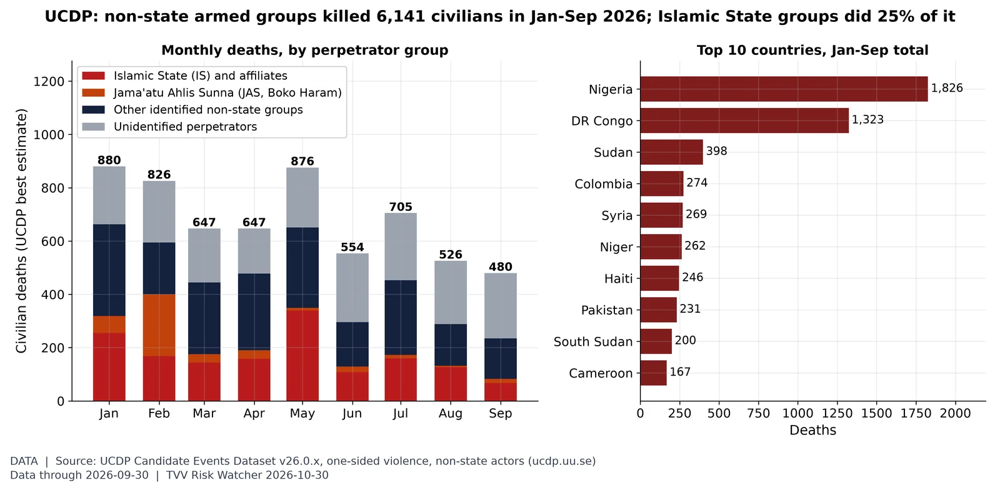
Who is killing civilians. UCDP's preliminary data record 6,141 civilians killed by non-state armed groups in Jan-Sep 2026 (480 in September); Islamic State groups account for 1,525, and Nigeria (1,826) and DR Congo (1,323) lead by country. Source: https://ucdp.uu.se/downloads/
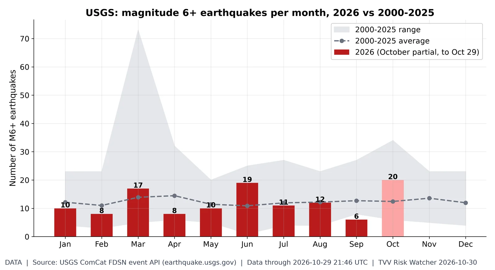
M6+ quakes by month. October 2026 has 20 M6+ quakes through Oct 29 vs a 2000-25 full-October average of 12.4; the busiest 2026 month was Oct (20). Source: https://earthquake.usgs.gov/fdsnws/event/1/
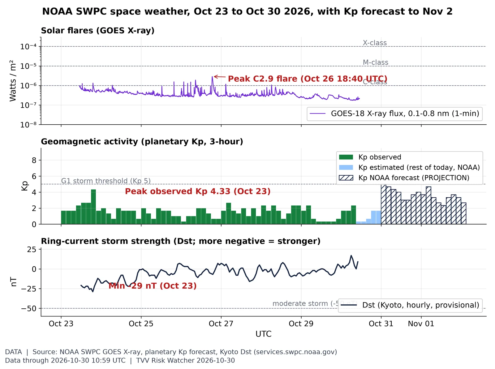
Space weather this week: flares, Kp, Dst. Peak observed Kp this week was 4.33 (Oct 23); Dst minimum -29 nT (Oct 23), latest 9 nT. The week's biggest flare was C2.9 (Oct 26). NOAA forecasts a peak Kp 5.00 (NOAA Scale G1) for Oct 31 (issued 2026 Oct 30 0030 UTC). Source: https://www.swpc.noaa.gov/products/goes-x-ray-flux
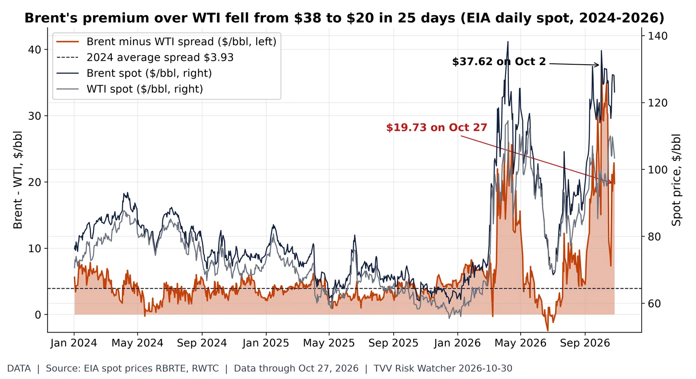
Brent-WTI premium: $38 to $20. EIA daily spot: Brent $123.10, WTI $103.37 on Oct 27, a $19.73 Brent premium, down from $37.62 on Oct 2 (2024 average $3.93). A wide Brent premium signals seaborne (Gulf-exposed) crude scarcity relative to landlocked US supply; the narrowing means that stress has eased on paper even as both prices stay high. Source: https://www.eia.gov/dnav/pet/hist/RBRTED.htm
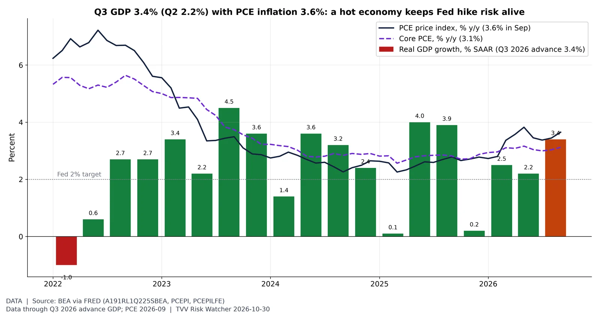
Hot growth, hot prices. BEA advance estimate (Oct 29): real GDP grew 3.4% annualized in Q3 2026 after 2.2% in Q2; final sales to private domestic purchasers rose 4.9%. September PCE inflation was 3.6% y/y (core 3.1%), above the Fed's 2% goal; the FOMC held at 3.75-4.00% on Oct 28. Next GDP estimate Nov 25. Source: https://www.bea.gov/news/2026/gdp-advance-estimate-3rd-quarter-2026
Gold-to-silver ratio. An ounce of gold buys 78.6 ounces of silver at the Friday-morning spot (gold $3,981, silver $50.63), vs 66.9 in September and a 1990-2026 average of 70. Source: https://www.worldbank.org/en/research/commodity-markets
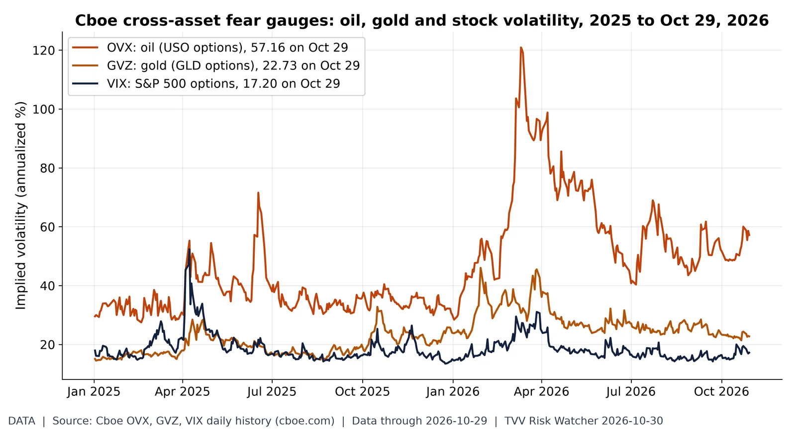
Oil volatility vs stock volatility. On Oct 29, oil implied volatility (OVX) closed at 57.16, 3.3x the VIX (17.20); gold's GVZ was 22.73. OVX's 2026 closing high is 120.91 (Mar 11). Source: https://www.cboe.com/us/indices/dashboard/ovx/
Amazon and Intel Q3 in numbers. From the Q3 10-Qs filed Oct 30: Amazon revenue $201.9B (+12.1% y/y), operating income $28.1B vs $17.4B, net income $20.7B vs $21.2B; capex $77.3B vs $35.1B (38% of revenue) against operating cash flow of $42.4B. Intel revenue $16.5B (+21%), operating income $2.52B vs $0.68B, net income $3.32B vs $4.06B. GAAP figures as tagged in XBRL; quarterly cash flow = 9-month minus 6-month YTD. Source: https://www.sec.gov/cgi-bin/browse-edgar?action=getcompany&CIK=0001018724&type=10-Q
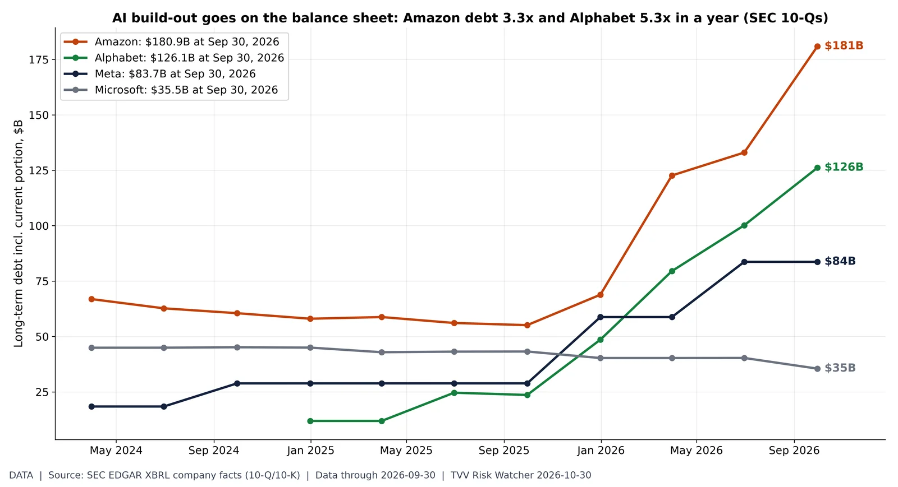
Hyperscaler debt pile. SEC 10-Q/10-K balance sheets (XBRL), long-term debt including current portion: Amazon $180.9B vs $55.1B a year earlier; Alphabet $126.1B vs $23.6B a year earlier; Meta $83.7B vs $28.8B a year earlier; Microsoft $35.5B vs $43.2B a year earlier. Amazon's 10-Q filed Oct 30 shows the jump to $180.9B at Sep 30. Microsoft funds more through leases (finance lease liabilities $71.0B), which this chart excludes; operating leases also excluded. Source: https://www.sec.gov/cgi-bin/browse-edgar?action=getcompany&CIK=0001018724&type=10-Q
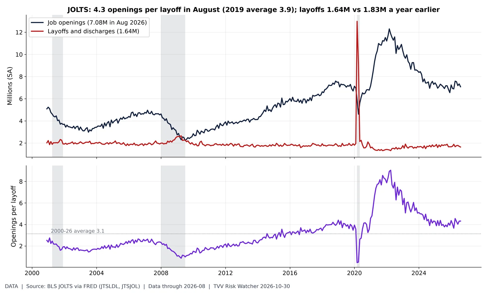
Openings per layoff. BLS JOLTS (August 2026): 7.08M job openings vs 1.64M layoffs and discharges, 4.3 openings per layoff (2019 average 3.9; 2000-26 average 3.1). Layoffs were 1.83M a year earlier; the post-2021 high was 1.90M (Mar 2023). Grey bands = NBER recessions. Source: https://fred.stlouisfed.org/series/JTSLDL
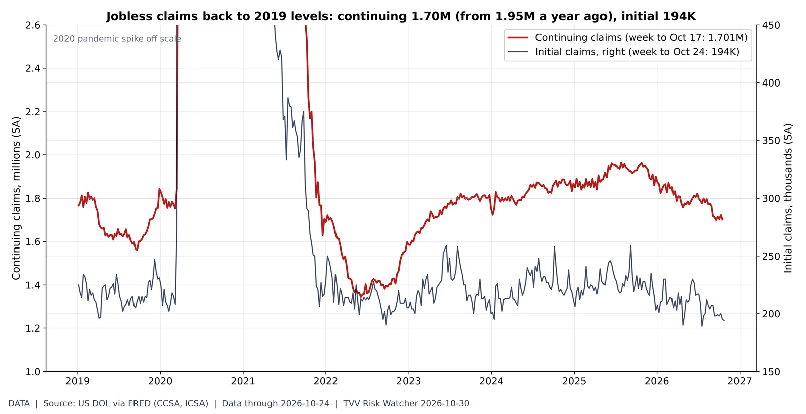
Claims back at 2019 levels. DOL (via FRED): 1.701M continuing claims in the week to Oct 17 (1.953M a year earlier; 2019 average 1.68M) vs initial claims of 194K in the week to Oct 24 (2019 average 218K). Continuing claims are 13% below a year ago and within 1% of the 2019 average: no sign yet in UI data of the broad AI-driven layoff wave that is feared; claims count only insured workers. Source: https://fred.stlouisfed.org/series/CCSA
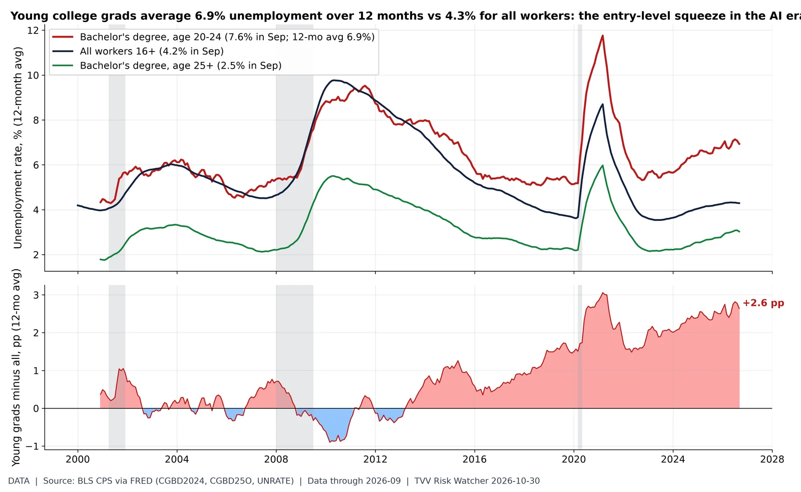
Entry-level squeeze. BLS (CPS via FRED, not seasonally adjusted for the degree series): bachelor's-degree holders aged 20-24 had 7.6% unemployment in September 2026 vs 4.2% for all workers and 2.5% for bachelor's holders 25+. On 12-month averages (removing the school-year seasonality) the young-grad gap is +2.6 pp (pre-2020 high +1.7 pp). Entry-level white-collar hiring is where AI substitution is expected to show first, but this series does not isolate AI as a cause. Source: https://fred.stlouisfed.org/series/CGBD2024
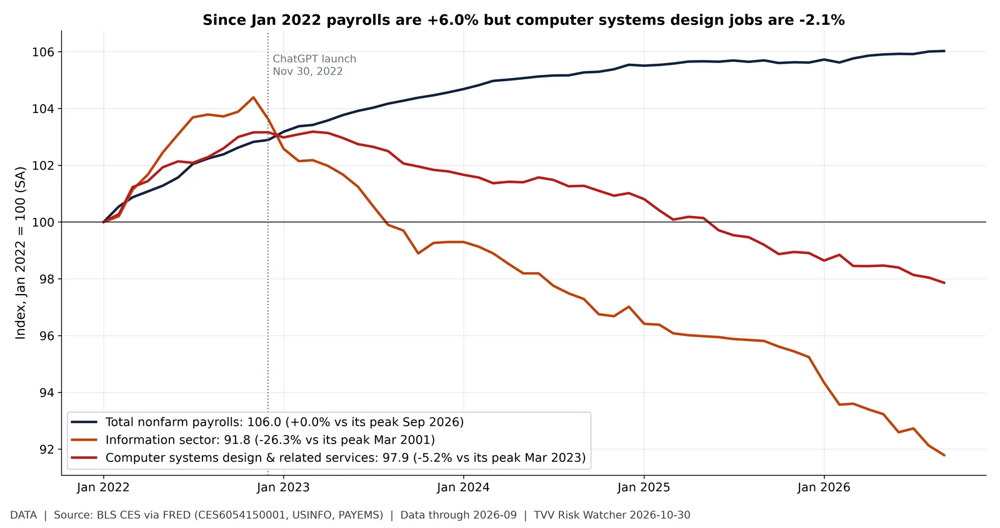
Tech jobs lag the economy. BLS payroll survey (September 2026): computer systems design & related services employed 2.36M (-5.2% vs its Mar 2023 peak); information sector 2.74M; total payrolls 159.0M. Both tech-heavy series lag total payrolls since 2022; rate hikes, post-pandemic over-hiring and AI coding tools all overlap, so the chart shows exposure, not proof of AI-caused job loss. Source: https://fred.stlouisfed.org/series/CES6054150001